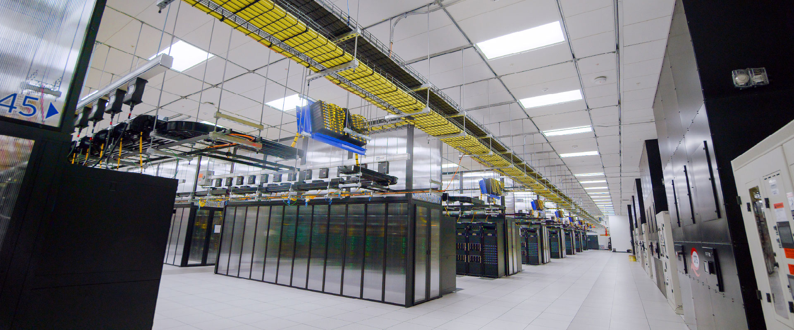
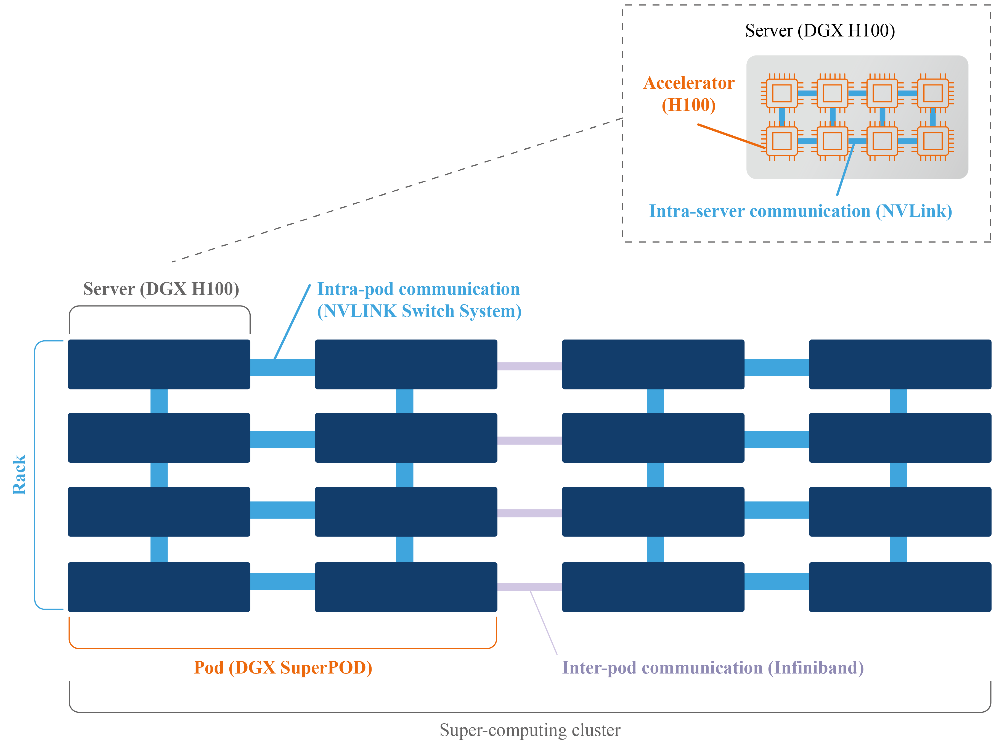
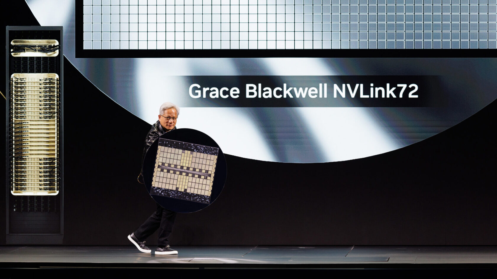
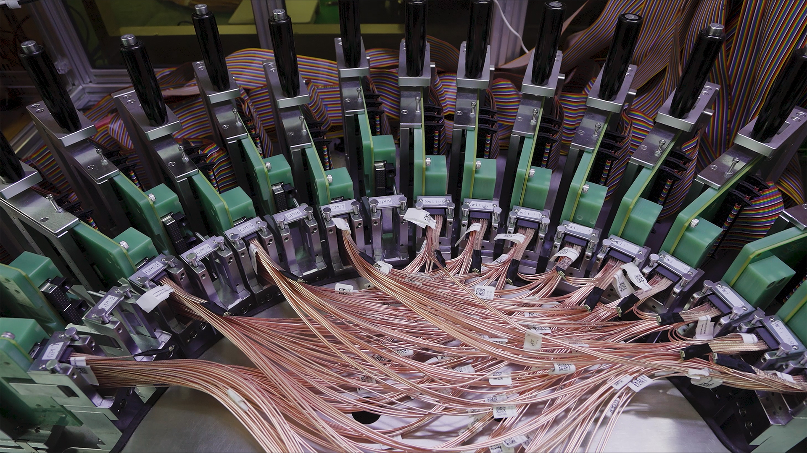
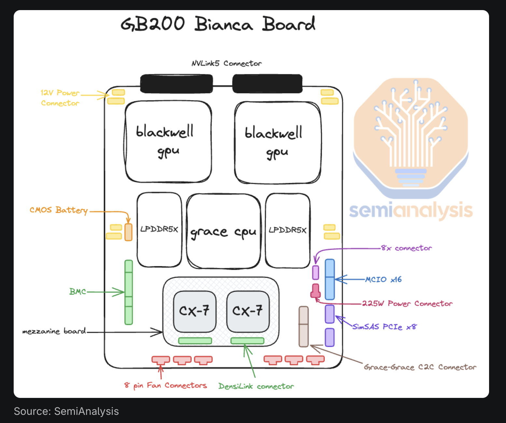
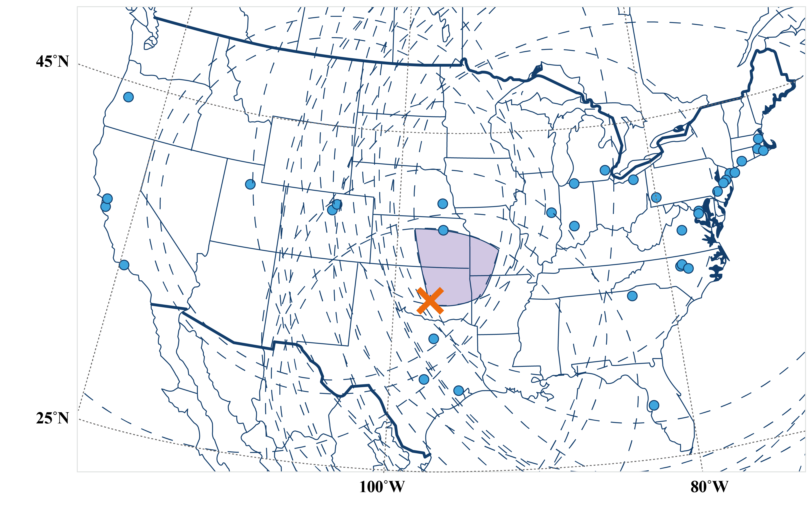
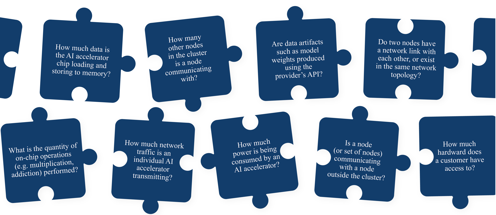
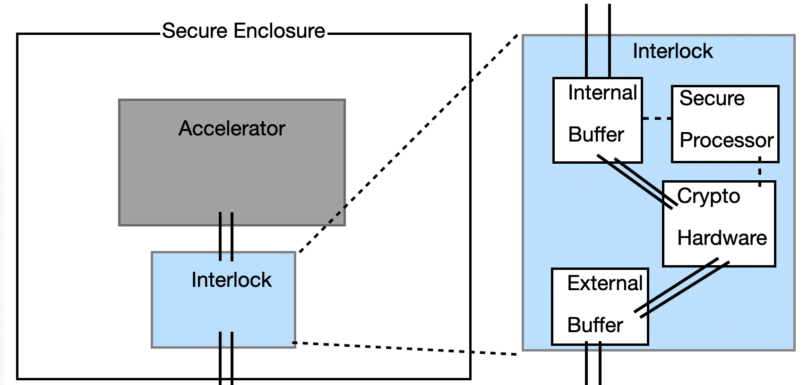
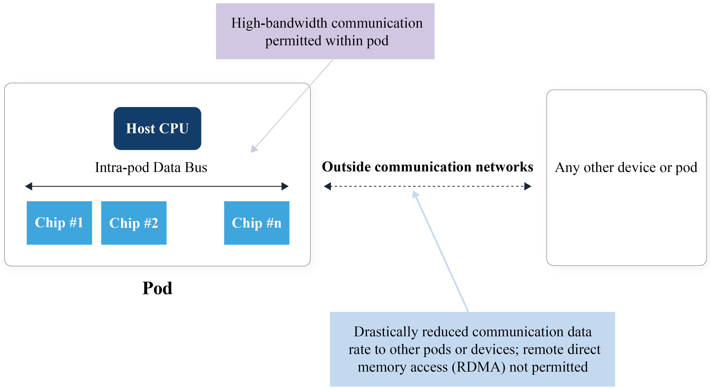
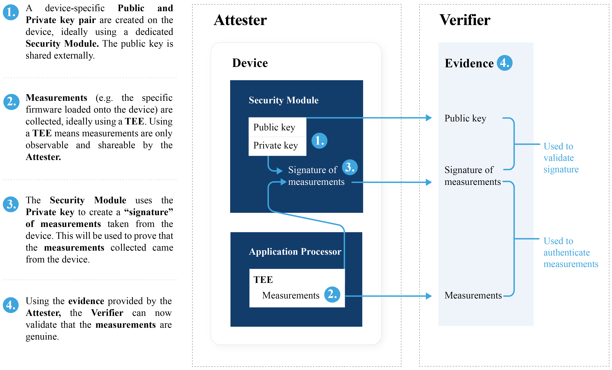

Research directions for verifiable AI slowdown
A self-contained technical map of the main public papers and posts on verifying (and preferably throttling) frontier AI training under low trust. For each piece: who wrote it, what problem it addresses, how mature it is, and how it relates to the rest of the stack. Diagrams first; public links in each section.
0.Why this exists, what “Claim A” means, and the stack
0.0 Motivation — why anyone is building this
Anthropic (2026), When AI builds itself. The Institute argued the world should have the option of a coordinated slowdown or temporary pause on frontier development — but only if parties can verify that others actually stopped, so bad actors cannot use a collective pause as cover to race ahead. Conditional pause language is the point: verification systems are a prerequisite, not a side quest. (anthropic.com/institute/recursive-self-improvement)
AI 2027, Appendix S (scenario research). If the US and China tried an AI arms-control style deal, how would cheating be caught? The appendix lists four imperfect families: (1) intelligence collection, (2) crude compute shutdowns with inspectors, (3) hardware-enabled mechanisms (HEM) — tamper-resistant reporting of what accelerators run, analogous to seals/attestations in other verification regimes, and (4) politically extreme “AI lie detection” of officials. This deck is mostly fleshing out family (3) and the monitoring stack that sits under it. (ai-2027.com · research notes on compute / verification)
Same problem, different genres: a lab institute essay (Anthropic) and a public scenario appendix (AI 2027) both treat credible verification as the binding constraint on any pause story.
0.1 The policy problem in one paragraph
Labs and governments sometimes talk about a coordinated slowdown or pause on frontier model development. That option is worthless if parties cannot tell whether others actually stopped. Self-reports are not enough under low trust (rival states, or competing labs). The technical agenda is: build monitoring / attestation / enforcement so large unauthorized training is discoverable or physically hard — without requiring mutual trust in each other’s word.
Training vs inference is the load-bearing distinction. Training updates weights (often with heavy multi-GPU communication). Inference serves a fixed model. Datacenters can look “busy” either way; a sophisticated actor can try to disguise training (especially post-deployment RL) as serving. So “the GPUs are warm” is not a proof of compliance.
0.2 Four claims people mix up
People say “AI verification” for several different sentences. This deck is almost entirely about Claim A.
Mixing claims is the most common briefing failure. FlexHEG / Cankaya / joshc / Rahman are mostly Claim A. Commercial TEE “AI Passport” products are mostly B/C (sometimes D) — useful, but they do not by themselves prove “no covert training.”
| Claim | Plain English | Primary audience | Example tech |
|---|---|---|---|
| A | No covert frontier training; only allowed / declared workloads on monitored compute | Treaties, pause/slowdown, export-control regimes | TAPs, recompute, train↔infer detectors, FlexHEG, PoL-style transcripts |
| B | The model that answered you is the one you bought / audited | Enterprise buyers, regulated sectors | Model identity binding, inference receipts, DRM-adjacent ZK |
| C | This run happened in a stated place / TEE; the host can’t read your data | Sovereignty, GDPR, confidential cloud | Confidential computing, remote attestation, location proofs |
| D | This agent only performed approved tool calls | Agent products / enterprise copilots | Audit logs, policy engines, “passport” receipts |
In: Claim A mechanisms and the research lineage around them. Out (except as contrast): commercial TEE inference products aimed at B/C/D. Those can share primitives (attestation, recompute) but answering B/C does not answer “did you secretly train a bigger model?”
0.3 Map of works covered
Wasil orients. Shavit designs classical monitoring; Rahman / Peigné harden thin slices of it (telemetry vs ZK transcripts). joshc stress-tests cheap facility controls → Cankaya assembles the retrofit; zkLLM/VerInf/DiFR sit under Plan B evaluate. FlexHEG is the parallel hardware-enforcement track.
Maturity legend used below: Survey (conceptual menu) · Blueprint (architecture, no full deploy) · Empirical paper (measured results) · Prototype / demo · Horizon (no working end-to-end system yet) · Product (mass deployment — almost nothing here qualifies).
0b.Hardware · ML systems · crypto vocabulary
Zoom from hall → interconnect layers → rack → node → board → SM, then why traffic looks different for train vs infer, then ZK vocab for §§6–7. Skim once; jump back when a later section feels opaque.
1 · Where this lives — a real hall

2 · Organizing abstraction — interconnect ladder
Everything below is a zoom into one of these layers. Tap feasibility is uneven because only some layers ever become light.
IB/RoCE (layer 3) carry the cross-node all-reduces Claim A people want to meter. Layer-2 copper spines move TB/s without becoming light — hard tap case for Cankaya/joshc.
| Link | Medium | Job | Tap note |
|---|---|---|---|
| NVLink / NVSwitch | Copper (board / cable cartridge / rack spine) | Scale-up: activations, TP shards, in-rack collectives | Hard — never becomes light |
| InfiniBand (Quantum…) | DAC copper short; fiber + QSFP/OSFP longer | Scale-out GPU↔GPU (NCCL over RDMA) | Fiber segments = tap candidates |
| RoCE / Spectrum-X | Same physical story as IB, Ethernet framing | Same role as IB in many clouds | Same EO story |
| PCIe | Board traces | GPU↔CPU / GPU↔NIC | Inside box |
| AOC / transceiver | Electrical→laser→fiber→photodiode→electrical | Longer runs, leaf–spine, NS exit | Conversion lives in the pluggable module |
Electro–optical conversion in one sentence: the NIC SerDes is electrical; for distance you plug in a module that drives a laser into fiber and recovers bits at the far end. Passive optical taps copy photons on the fiber; they do nothing for copper NVLink spines inside the rack.
3 · Ladder mapped onto a facility
NIC sits on the node because that is the scale-out edge for classic topologies — not because IB is “a pod thing.” Cross-pod is just one hop on the same scale-out fabric.

4 · Zoom: one scale-up domain (rack)


5 · Zoom: one node (ladder layers 2→3)
Spatial zoom of the interconnect ladder’s layers 2→3. Fowler-style “two 8-GPU nodes” watch the cable between NICs; Rahman-style classifiers watch per-GPU NVML time series.
6 · Zoom: one board (ladder layers 1→2)

7 · Zoom: inside the GPU die — SM
Think of SMs as many small CPUs glued to shared HBM. Prefill matmuls wake lots of SMs; token-by-token decode often waits on memory → SM util can look “idle” while the GPU is still serving.
8 · Why so many GPUs, and why traffic differs
Frontier training is big because the model state does not fit on one GPU, so you must shard and communicate constantly — mostly on ladder layers 2–3.
| Scale intuition (public anchors, ~2024–26) | Number |
|---|---|
| Llama 3.1 405B dense params | 405×10⁹ |
| BF16 weights alone | 405B × 2 B ≈ 810 GB |
| Naive train state (W + grad + Adam ≈ 16 B/param) | ≈ 6.5 TB total |
| One H100 HBM | 80 GB (SXM) / ~94–96 GB (some SKUs) |
| B200 / Blackwell HBM class | ~180–192 GB/GPU (gen-dependent) |
| One GB200 NVL72 rack | 72 GPUs · ~13.4 TB HBM aggregate |
| Llama 3.1 405B pretrain cluster (Meta report) | up to ~16,384 H100s · ~3.8×10²⁵ FLOP · ~15.6T tokens |
| Rough “why many GPUs”: fit train state + activations | 405B needs ≫1 GPU; production runs use 10³–10⁴+ |
Closed frontier labs (OpenAI / Anthropic / Google) don’t publish exact GPU counts; treat Llama 405B as the best public lower-bound picture of “what a near-frontier dense run looks like,” not the ceiling. MoE frontier runs can advertise huge total params with fewer active params/token — still multi-thousand-GPU jobs.
DiLoCo / LocalSGD: train locally for many steps, sync rarely → average cross-node GB/s can look “inference-quiet” while training still happens.
SM util: how busy GPU compute units are. Prefill can pin SMs; decode is often memory-bandwidth bound — so SM util alone is a weak train/infer label.
| Term | Meaning |
|---|---|
| TP | Tensor parallelism — split a layer’s matrices across GPUs; exchange activations each layer |
| DP / DDP | Data parallel — full model replica per worker; all-reduce gradients |
| FSDP | Fully sharded data parallel — shard params; all-gather when needed |
| NCCL | NVIDIA collective communications library implementing all-reduce etc. |
| NVML / DCGM | Per-GPU sensor APIs (power, SM util, memory…). Not cross-node byte counters |
| SM util | Fraction of SMs busy in the sample window — compute busyness, not “is this training?” |
| Warden | Active network scrubber on the monitored path (normalize headers/timing to kill stego) — see §4 |
| DiLoCo | Low-communication training: many local steps, rare outer sync — can evade “fat interconnect” detectors |
9 · Zero-knowledge proofs (for §§6–7, §9)
Don’t collapse these. A demo can be complete+sound in crypto and still give low assurance if you sample 0.001% of requests or leave EW copper blind.
A “constraint” is a math check over 𝔽_p (e.g. c − a·b = 0), not a governance policy. The integer gap is why “ZK receipt” and “bit-exact AE recompute” are different Plan B / Plan A stories.
Constraint system intuition: turn “this forward pass was correct” into a huge set of algebraic checks over a prime field 𝔽_p (multiplications, lookups, range checks). The prover knows a witness (weights, activations) satisfying every constraint; the verifier checks a short proof that such a witness exists for the public statement — without learning the witness.
Integer constraint, concretely: GPUs run BF16/FP8 with rounding; SNARK circuits run integers mod p. zkLLM-style systems therefore prove a quantized integer circuit that approximates the model, not “whatever your CUDA float kernel did today.” That is why Plan A cares about bit-exact float recompute, and why VerInf replaces exact equality with an unexplained-info bound (Û / U-hat). Failures of soundness = false compliance; failures of ZK / confidentiality = IP/data leakage through the proof; failures of assurance = you never sampled the cheat.
1.Wasil et al. — verification method menu
arXiv:2408.16074 · 2024
Who
Wasil, Reed, Miller, Barnett et al. — survey aimed at international AI agreements (access assumptions + evasion sketches).
Maturity
Survey / coordinate system. Not a deployable stack. Useful to prevent “we solved verification” talk after reading one mechanism.
Problem it frames: If states agree “don’t secretly train too big / don’t secretly build too many DCs,” what instruments exist? Two violation types: unauthorized training and unauthorized datacenters.
Lineage: Entry point for the rest of this deck. Later works sit in its hardware-dependent / access-dependent cells (Shavit, FlexHEG, location proofs, workload monitoring).
Wasil taxonomy: cooperation cost ↑ left→right; technical bite ↑ left→right. Not a system design — a menu.
What to remember technically
- Methods differ in access assumptions: unilateral national technical means vs negotiated entry vs pre-agreed chip behavior.
- Hardware-dependent methods are highest bite and hardest diplomacy.
- Chip location ≠ training proof. Location answers “where is the silicon?”; workload methods answer “what did it run?”
One Wasil cell — chip location proofs — looks like this: you are not proving “this GPU trained legally.” You are proving (approximately) “this registered chip is physically near claimed site X,” so a dark training cluster in an undeclared country is harder to hide. Delay-based / multi-anchor checks exploit physics: light in fiber has a max speed, so round-trip time to a trusted probe sets a distance upper bound.

2.Shavit — Catch a Chinchilla (+ Proof-of-Learning)
arXiv:2303.11341 · 2023 · PoL primitive: Jia et al. 2021
Who
Yonadav Shavit — early blueprint for monitoring large training runs via chip-level weight fingerprints + training transcripts + supply-chain coverage.
Maturity
Blueprint. Problem decomposition, not an industry-deployed end-to-end system as of 2026.
One sentence: force frontier training onto registered ML chips that leave sparse weight fingerprints; require a transcript that explains those fingerprints (Proof-of-Learning-style checks); audit the supply chain so dark chips can’t skip the net.
Lineage: Classical “what Claim A monitoring could look like.” Gaps it leaves → later work: train↔infer ambiguity (Rahman); cryptographic transcripts (Peigné); active hardware caps instead of after-the-fact snapshots (FlexHEG).
Shavit stack: fingerprints on chip + proof the transcript explains them + no dark chips outside the registry.
Threat model that matters
Prover is a covert adversary: cheats only when it can look compliant. Design goal = make “look compliant while cheating” nearly impossible under random chip audits.
On chip
Firmware occasionally hashes / records HBM weight shards. Needs signed firmware + later physical spot checks (remote attestation alone is weak against a physical adversary).
In the DC
Transcript = data references, hparams, checkpoints, optimizer trajectory. Verifier samples steps; inconsistency or illegal scale ⇒ fail.
Open issues Shavit already flags
- Train vs infer lookalike occupancy of HBM.
- Legacy chips without secure firmware — small/medium training may escape.
- Vendor–prover collusion on backdoored firmware.
3.Rahman & Tajdari — train vs infer from NVML
arXiv:2606.19262 · TAIGR @ ICML 2026
Who
Robi Rahman (MIRI Technical Governance; ex-Epoch) and Sabiha Tajdari (UVA) — SPAR-originated empirical red-team of GPU workload classifiers.
Maturity
Empirical paper + public tooling lineage. Real numbers under adversarial disguise. Solves only a thin slice of Claim A (label train vs infer), not full rule verification.
Question: can you tell training vs inference from GPU telemetry (NVML) without touching weights or data?
Lineage: Attacks the gap Shavit flagged and that FlexHEG/joshc classifiers often assume. Complements interconnect-based detectors (communication volume) — different observation channel.
Thin layer only: “is this training?” not “did this training violate a FLOP license.” Empirically grounded where Shavit/ZK are still blueprints.

Numbers to keep (and not overclaim)
- ~98.2% overall accuracy across their matrix.
- Under the hardest disguises, ~43–87% — robust overall, meaningfully degraded under sophisticated evasion; not “solved.”
- Method: 5-round monitor–evader loop, multi-GPU / multi-arch — the right evaluation bar for any such detector.
4.joshc — TAPs, wipes, and covert RL
LessWrong / Alignment Forum · 2026
Who
joshc (Alignment Forum / LessWrong) — red-team essay on whether fast, cheap facility mods can slow training before treaty-grade hardware exists.
Maturity
Red-team / requirements doc. Not a product. Sets pass/fail bars for prototypes (TAP + recompute + wipe + accounting).
Question: before global FlexHEG-class silicon exists, can governments slow training by pulling InfiniBand, capping rack egress (~100 KB/s), TAP+recomputing outputs, wiping memory, demanding PoW/PoM?
Naive lever: training is communication-hungry; inference is text-skinny. joshc’s point: under today’s prototype strength, that lever may fail against modern RL pipelines (rollouts look like inference; updates can hide in a small dark fraction of compute + leaky recompute slack).
Lineage: Stress-tests the “medium” rung (after you’ve seen how thin NVML train↔infer is). Motivates tighter recompute (Cankaya bit-exact / DiFR), better taps, and why FlexHEG remains the longer-term enforcement story.
joshc’s killer scenario: compliant-looking RL rollouts + dark updater. Near-term network controls without those thresholds may not buy a real pause.
Facility toolkit (where each tool sits)
Whitelist channel = the only high-bandwidth path allowed to reload weights after a wipe — gated by Hash(W)∈registered commitments.
Five near-term tools (compressed)
| Tool | Idea | Author’s read |
|---|---|---|
| Pull IB | Replace ~400 GB/s fabrics with slow copper | ~1y prep plausible |
| BW limiter + TAP | Cap egress; sample traffic | to ~100 KB/s plausible |
| Output recompute | Replay declared model M on tapped I/O | ~1% nondeterminism budget = covert channel |
| Memory wipe | Force verifiable fill; reload whitelist model | needs ≫99.99% coverage — hard |
| PoW / PoM | Account for FLOPs/memory spent on declared serving | useful if >95% coverage |
If a demo doesn’t close the RL-smuggling channel under realistic slack, it has not purchased a credible pause — regardless of how good benign accuracy looks.
5.Cankaya — taps, challenges, and precise replay (Plan A)
System overview LW · taps Substack Apr 2026 · bit-exact 2606.00279 · DiFR (statistical slack) 2511.20621
Who
Naci Cankaya (MIRI technical governance) — whole-facility retrofit blueprint: capture I/O → random challenge → evaluate. Bit-exact paper is the Plan A numerics companion; taps note is the capture companion.
Maturity
Overview: blueprint. Taps: feasibility + commodity-tech argument (NS ready-ish; EW needs pilots). Bit-exact: empirical + emulator prototype for inference — not a training verifier; not yet a fielded AE standard.
Shared audit question: was this sampled request run on the whitelist model?
Plan A (near-term default): air-gapped audit environment (AE) holds the whitelist weights and recomputes the challenged forward pass in plaintext, then compares to tapped I/O. For that comparison to be a pass/fail (not a ~1% stego channel à la joshc), you need precise replay — ideally bit-exact under recorded metadata, or a disciplined statistical alternative (DiFR).
Plan B (later sections): replace AE recompute with ZK so the peer needn’t see weights — zkLLM (§6) or VerInf (§7). Same challenge loop; different evaluate engine.
Lineage: Turns joshc’s TAP/recompute sketches into an arms-control-shaped architecture. FlexHEG is the longer hardware track; Peigné (§9) is the training-ZK cousin.
Properties checklist (before the diagrams)
| Property | Plain English | Plan A (AE plaintext) | Plan B (ZK) |
|---|---|---|---|
| Completeness | Honest clean prover passes | Needs bit-exact / DiFR so benign noise ≠ reject | Honest π verifies |
| Soundness | Cheater fails | Recompute mismatch / wrong W vs C | Bad witness can’t forge π (or Û bound) |
| Confidentiality | Secrets stay secret | Weak — W and challenged I/O enter AE | Stronger — witness not revealed |
| Assurance | Field catch probability | Soundness × sample rate × tap coverage × stego slack | Same multipliers; π ≠ free lunch |
Plaintext recompute answers soundness-ish checks by literally redoing the math. ZK answers them with a proof. Same audit question; different confidentiality cost.
Why plaintext recompute is not enough (even when it “works”): it can deliver completeness/soundness/assurance under good engineering, but it fails the low-trust confidentiality goal — rival labs/states will not ship frontier weights into the other party’s AE, and neither trusts the other’s silicon inside the cage. That is the explicit motivation for Plan B. Plan A remains the near-term default because ZK at frontier scale is still expensive / immature — not because confidentiality doesn’t matter.
Inference side of Claim A / arms-control-like monitoring. Complements Peigné’s training ZK; sits under Cankaya’s tap → challenge → evaluate loop.
Adapted from Cankaya’s system overview: online evidence capture is continuous; evaluation is random challenges. Plan B swaps the AE plaintext recompute for a ZK proof.
Doors 1–3 can all pass while door 4 fails: whitelist model doing banned things. Soft classifiers are not a substitute for 1–3.
Network taps (where commitments come from)
Evidence capture layer under Cankaya’s blueprint. Source: Cankaya, secure network taps (Apr 2026).
- NS first: frontend traffic is ~Gb/s-class in the note’s Fermi — commodity FPGA / mid-range NIC; active wardens fit.
- EW: full mirror is infeasible; wide optical split + random sampling; need tensor metadata or bytes are meaningless.
- Copper NVL*: passive optical taps miss intra-rack scale-up — security falls back onto NS + storage.
Bit-exact inference verification (precise replay)
This is the load-bearing Plan A engineering claim: unmodified serving stacks are often deterministic enough once you freeze the right metadata — so “looks like noise” is usually non-invariance (reduction trees), not irreducible chaos.
arXiv:2606.00279 — bit-exact inference verification (Cankaya).
- Unmodified vLLM/HF are usually deterministic without special determinism flags; “noise” is mostly non-invariance (reduction trees), not atomics.
- CPU emulator can match A100/L40/H100 intermediates when SKU + kernel path are modeled.
- Metadata checklist: SKU · weights · parallel topology · software stack · per-forward batch size.
- DiFR: if you cannot field bit-exact, keep statistical slack — but then budget the covert channel explicitly (joshc’s warning).
Tap → I/O commitments · Bit-exact (+ metadata) → close stego slack · AE recompute (Plan A) evaluates samples. §§6–7 swap in ZK at the evaluate step only.
6.zkLLM — prove the integer circuit ran
arXiv:2404.16109 · Sun, Li, Zhang · ACM CCS 2024 · code
Who
Haochen Sun, Jason Li, Hongyang Zhang — first widely cited exact-circuit ZK system for LLM inference at non-toy scale (~13B).
Maturity
Published system + limited scale. Spot-check engine, not “every API request.” Integer/quantized circuit ≠ arbitrary float serving bit-exact.
Statement: there exist weights W matching public commitment C such that the public architecture, run as an integer circuit on public x, yields public y — without revealing W or activations.
Lineage: One Plan B evaluate backend under Cankaya’s challenge loop. Precursor / contrast to VerInf (§7): exact receipt vs unexplained-info score. Complements Plan A when the AE cannot see weights.
zkLLM composition: verifier never re-runs the model — only checks random algebraic relations against commitments.
Numbers (paper anchors)
| Item | Rough public figure |
|---|---|
| Scale | ~13B (OPT / LLaMA-2 class) |
| Prove time | ~1–15 min (CUDA, setting-dependent) |
| Proof size | < ~200 KB |
| Verify | ~1–3 s |
| Commit scheme | Hyrax (no trusted setup) |
Guts (enough to not handwave)
- Hyrax: polynomial commitment binds W into C; open evaluations at random points.
- Sumcheck: big matmuls / sums become interactive algebraic checks.
- tlookup: non-arithmetic ops → prove secret tensor entries lie in a public table via a rational identity at a random point.
- zkAttn: Softmax shift shrinks exp domain; don’t prove exact log-sum-exp — only a tolerance band on row sums (fine for execution receipts; dangerous if bolted onto a manipulable unexplained-info score).
What it does not prove
- Bit-exact match to H100/B200 float serving (that’s Plan A / bit-exact paper).
- Anything about training — only a forward pass receipt.
- Frontier 100B+ scale in the published system (see VerInf for the larger demo with a different statement).
Swap whitelist model → fails vs C. Abuse Softmax tolerance → can still Accept under loose bands. Float nondeterminism is mostly irrelevant because you never claimed float equality.
7.VerInf — bound leftover bits, skip float bit-exact
Petrie 2026 draft · github.com/JamesPetrie/VerInf · FLI / FlexHEG author
Who
James Petrie — same hardware-governance thread as FlexHEG. VerInf is the “replace the recompute cluster with a ZK evaluate engine” instance at frontier demo scale.
Maturity
Working draft + large demo, not production audit tooling. Interactive, expensive proofs meant for rare high-stakes spot checks when both parties have serious compute.
Statement: a committed integer model explains a (possibly hidden) token stream well enough that leftover unexplained information is ≤ a public bound Û bits/token — without revealing weights, activations, or plaintext I/O.
Lineage: Other Plan B evaluate backend under Cankaya. Designed precisely because Plan A bit-exact and zkLLM-style exact equality both get brittle or tiny-scale at frontier serving.
VerInf — unexplained-info ZK at frontier demo scale.
Why change the statement
- Float nondeterminism + MoE/serving stacks make “y must equal AE recompute” expensive to field at 400B.
- Exact-circuit ZK at 13B already hurts; naively scaling the zkLLM statement is the wrong lever.
- Û is an auditable score: too large ⇒ looks like wrong model / stego / garbage; threshold is a policy knob.
Demo anchors (draft)
| Item | Rough figure |
|---|---|
| Model | Llama-4-Maverick ~400B MoE (commit all experts/layer) |
| Sequence | 1000 tokens (500+500), fully hidden in the demo |
| Û | ≈ 0.88 bits/token (~95% of vocab info explained) |
| Prove / verify | ~14 h prove · ~94 GB π · ~18 h verify (single high-end box class) |
| Witness stream | ~7 TB streamed · ~84 GB peak RAM |
vs zkLLM (cheat table)
| Cheat | Plan A (§5) | zkLLM (§6) | VerInf (§7) |
|---|---|---|---|
| Swap whitelist model | recompute mismatch | fails vs C | Û blows up |
| Float nondeterminism | pain; bit-exact / metadata | proves circuit, not float replica | slack → Û |
| Softmax slack abuse | if loose match, channel | still Accept possible | forbidden design goal; unique shift |
Spot checks, not every request. Plan A ≈ recompute GPU-time. zkLLM-13B ~minutes + tiny π. VerInf-400B = hours + tens of GB — rare audits when secrecy of weights beats AE plaintext.
8.FlexHEG trilogy — especially Part II
Tech 2506.03409 · Overview 2506.15093 · Intl 2506.15100 · flexheg.com · 2025
Who
James Petrie, Onni Aarne, and collaborators (FLI / ARIA-linked FlexHEG program). Hardware-enabled governance design for accelerators.
Maturity
Blueprint + early demos (enclosure / metering ideas). Not mass-deployed product silicon. Grant-funded engineering (incl. partners building tap/wipe primitives).
FlexHEG = Flexible Hardware-Enabled Guarantees: a guarantee processor that locally enforces / attests rules, plus a secure enclosure that makes bypass expensive. Rules should be updatable under multi-party authorization.
Lineage: After the near-term retrofit path (§§5–7): moves Claim A from Shavit-style after-the-fact snapshots toward active guarantees (FLOP caps, licenses, interlocks). Near-term retrofit path often emphasized: NIC / scale-out interlock before in-die changes. Complements Cankaya’s facility-level taps (different layer).
FlexHEG dual core: local notarization + physical hardness. Privacy: prove compliance without shipping weights abroad.


Integration ladder (speed vs hardness)
| Mount | Deploy speed | Security | Who can ship it |
|---|---|---|---|
| In-die / PCB redesign | slow (multi-year silicon + fleet churn) | strongest | incumbent vendors |
| Retrofit modules | medium | medium (detach risk) | third parties possible |
| Firmware-only | faster | weaker vs physical | needs signed secure boot |
| Pure software | fastest | weakest | anyone — not a treaty root |

9.Peigné-Lefebvre et al. — ZK verification of frontier training
arXiv:2606.05433 · 2026 · GPAI Policy Lab / FAR.AI · Sorbonne/LIP6
Who
Pierre Peigné-Lefebvre, Ky Nguyen, and coauthors — argument that ZK verification of frontier training is possible in principle via a BF16/FP32-aware zkVM.
Maturity
Horizon. Authors are explicit: no working end-to-end prototype; rough ~36 months to a deployable PoC vs 6–10 years for custom verification silicon; long open-problem list.
Idea: make Shavit’s transcript story cryptographically binding — genesis / step / optional ex-ante proofs without revealing the proprietary run.
Lineage: Different problem than §§5–7 (those audit inference whitelist forward passes). This is the crypto endgame of classical training monitoring. Does not replace near-term FlexHEG/Cankaya work; clarifies what “strong” would mean if telemetry stays porous.
Crypto endgame of the Shavit idea. Treat as research horizon, not near-term pause tooling.
10.Putting the stack in one breath
What an outsider should be able to repeat after this deck.
Claim A = verify no covert frontier training (≠ TEE model-identity or
confidential-cloud claims B/C). Wasil is the method menu. Shavit is the
classical chip+transcript blueprint. Rahman measures how far NVML train↔infer
detectors survive disguise (closes Shavit’s lookalike gap). joshc red-teams cheap
facility controls against covert RL.
Cankaya is the near-term low-trust retrofit: NS-first taps feed commitments;
Plan A = AE precise replay (bit-exact metadata; DiFR if needed). Plan B swaps
the evaluate step for ZK — zkLLM (~13B exact integer circuit) or VerInf
(~400B unexplained-info bound Û). FlexHEG is the parallel hardware-enforcement
track (active caps / interlocks), not a substitute for taps+evaluate. Peigné
sketches ZK *training* as a longer crypto horizon. Almost none of this is mass-deployed product yet — blueprints,
empirics, and prototypes.Open problems / next-step research (what to do after this deck)
These are not “unsolved math curiosities” — they are the load-bearing gaps between today’s blueprints and a credible pause. Several track cruxes raised against Cankaya’s retrofit (precise replay, sampling economics, perimeter, rare covert adapters, Plan A→B transition, adjudication).
| # | Problem | Why it blocks | Concrete next step |
|---|---|---|---|
| 1 | Precise replay vs softer accept | Plan A soundness/completeness hinge on bit-exact (or DiFR slack). Unknown: residual mismatch rate across SKU/driver/batch, and FP cost of chasing zero mismatch vs budgeting a channel. | Medium-scale empirics (e.g. ~70B) across heterogeneous GPUs/drivers: exact-match rate vs DiFR-style accept; metadata necessity set; cost/latency of each policy. |
| 2 | Sampling economics | Assurance = soundness × sample rate. Appendix-style Fermi needs a real BoM: can Plan A / zkLLM / VerInf hit ~1% overhead at a stated catch probability? | Publish cost curves: challenge rate → catch prob → $/request for AE recompute vs zkLLM-13B vs VerInf-400B-class proofs. |
| 3 | Perimeter / NS-only residual | NS-first taps leave EW copper and off-perimeter compute undertapped. Bar: residual outside the fence can’t do consequential covert work at high confidence. | NS-only red-team budget (joshc-style local RL / DiLoCo): how many covert FLOPs survive; optional interconnect detectors (Fowler-style) as complement. |
| 4 | Rare-trigger / thin adapters | Forward-pass recompute can match a whitelist while a rarely activated LoRA / tool path does harm — identity ≠ all governance goals. | Red-team: memory probes, NVML anomaly, wipe/accounting, inspector agents under disclosure bounds; measure miss rate for sparse triggers. |
| 5 | Train↔infer under disguise | Rahman: hard disguises degrade NVML classifiers. joshc: RL rollouts look like serving. Soft labels alone won’t carry Claim A. | Combined channel study: NVML + interconnect bytes + tap commitments under adaptive evade; report ROC under the hardest loop, not only benign accuracy. |
| 6 | Plan A → Plan B transition | Plaintext AE burns confidentiality; ZK restores it but is immature/expensive. Stakeholders need a migration path, not a cliff. | Timeline + dual-run design: which challenge classes stay on AE, which move to zkLLM/VerInf as prove-time falls; joint ops with both evaluate engines. |
| 7 | Physical security of AE / taps | Low-trust Plan A assumes rival TCBs + continuous physical monitoring. If forgeable silently, assurance collapses. | Red-team / OSINT: diodes, FPGA wardens, SCIFs at scale, hosting foreign TCBs on sensitive weights — map failure modes to FlexHEG hardware track. |
| 8 | Adjudication & consequences | Technical Accept/Reject ≠ treaty breach. Without an escalation ladder + false-positive budget, either everything is excused or everything detonates. | Design CBRN-like ladder: anomaly → joint review → deeper disclosure → supervised inspection → predetermined response; name who adjudicates. |
| 9 | Hardware enforcement demos | FlexHEG remains the long enforcement story; near-term needs NIC/enclosure interlocks with honest overheads and multi-party rule updates. | Ship a NIC-level license/FLOP-cap prototype; measure overhead; stress single-vendor root-of-trust objections. |
1–5 are mostly empirical / systems (can move in months). 6–7 mix engineering with deployment politics. 8 is institutional. 9 / §8 FlexHEG is the parallel hardware track. A credible pause needs progress on several in parallel — closing only crypto or only taps is not enough.
Wasil 2408.16074 · Shavit 2303.11341 · joshc LW · FlexHEG flexheg.com · Rahman 2606.19262 · Cankaya overview LW · taps Substack · bit-exact 2606.00279 · zkLLM 2404.16109 · VerInf GitHub · DiFR 2511.20621 · Peigné 2606.05433